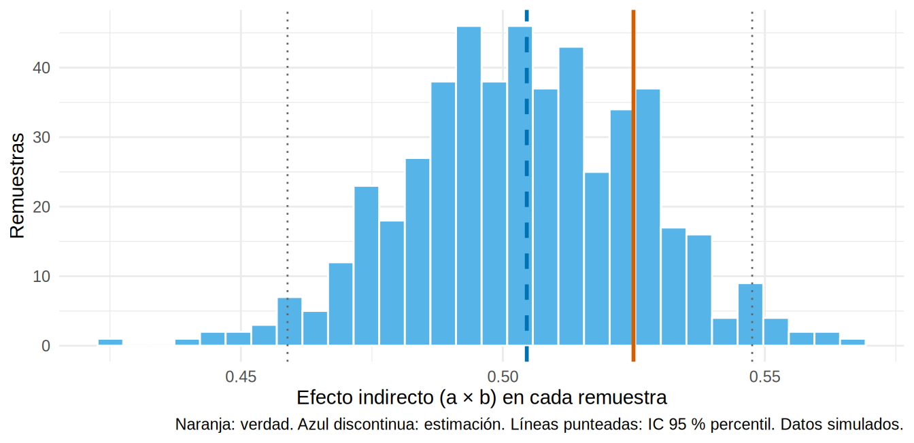

library(tidyverse)
library(boot)
library(marginaleffects)
source("R/funciones_epi.R")
source("R/funciones_extra_cap18.R")
source("R/simular_mediacion.R")
oraculo <- cargar_mediacion() # SIMULADO (ver 18.1)
ckd <- observar_mediacion(oraculo)
verdad <- verdad_mediacion(oraculo)Método de productos y de diferencias: dos regresiones y un bootstrap
Nota🩺 Escenario
Ya sabes qué es un efecto indirecto. Ahora te toca calcularlo. En tu base hay 5 000 pacientes con ERC y diabetes: unos iniciaron iSGLT2, a todos se les midió el cambio de UACR a los 6 meses y luego se calculó la pendiente de TFGe. El comité quiere una cifra con su intervalo de confianza: “¿cuánto del efecto pasa por la albuminuria?”. Necesitas un método sencillo, transparente y con incertidumbre honesta.
El método más usado en la práctica es de una sencillez que desarma: dos regresiones, un producto y un bootstrap. Después veremos la misma idea con otra mirada (la fórmula g del Cap. 12.6) que nos servirá cuando el modelo se complique.
Lo que vamos a hacer
- Ajustar los dos modelos (mediador y desenlace) y combinar sus coeficientes: producto (\(a \times b\)) y diferencia (\(c - c'\)).
- Obtener un intervalo de confianza por bootstrap y compararlo con el clásico de Sobel.
- Repetir el cálculo con la fórmula g (predecir “las dos películas”) y con
marginaleffects; mostrar el paquetemediation.
Paso 1. Los dos modelos
La idea es descomponer la cadena A → M → Y en eslabones y estimar cada uno con una regresión. Ambos modelos llevan los mismos confusores basales (edad, sexo, HbA1c, PAS, TFGe, ln UACR, ECV): sin eso, los eslabones estarían confundidos.
# Modelo 1 (eslabón "a"): ¿cuánto cambia el mediador con el fármaco?
m_med <- lm(delta_lnuacr ~ isglt2 + I(edad / 10) + sexo + hba1c + pas + tfg_basal + luacr + ecv, data = ckd)
# Modelo 2 (eslabones "b" y "c prima"): desenlace según fármaco Y mediador
m_out <- lm(pendiente_tfg ~ isglt2 + delta_lnuacr + I(edad / 10) + sexo + hba1c + pas + tfg_basal + luacr + ecv, data = ckd)
# Modelo 0 (efecto total "c"): desenlace según fármaco, SIN el mediador
m_tot <- lm(pendiente_tfg ~ isglt2 + I(edad / 10) + sexo + hba1c + pas + tfg_basal + luacr + ecv, data = ckd)
a <- coef(m_med)["isglt2"]
b <- coef(m_out)["delta_lnuacr"]
cp <- coef(m_out)["isglt2"] # c' : efecto directo
c_ <- coef(m_tot)["isglt2"] # c : efecto total
round(c(a = a, b = b, c_prima = cp, c_total = c_), 3) a.isglt2 b.delta_lnuacr c_prima.isglt2 c_total.isglt2
-0.339 -1.488 0.606 1.110 Cada número tiene una lectura clínica:
- a = -0.34: el fármaco cambia el ln(UACR) en -0.34 (una baja de ~29 %).
- b = -1.49: manteniendo fármaco y confusores fijos, cada aumento de 1 en el ln(UACR) (la UACR se multiplica por 2.7) empeora la pendiente en 1.49 mL/min/1.73 m²/año. Por eso bajar la UACR mejora la pendiente.
- c’ = 0.61: lo que el fármaco hace aunque no cambie la albuminuria (efecto directo).
- c = 1.11: el efecto total.
Paso 2. Producto y diferencia: dos caminos al mismo número
El efecto indirecto es la cadena de los dos eslabones: el fármaco cambia el mediador en \(a\), y cada unidad de mediador cambia el desenlace en \(b\):
\[ \text{NIE} = a \times b \qquad\qquad \text{(método de productos)} \]
La otra forma es por resta. Si el total es \(c\) y lo que queda cuando congelamos el mediador es \(c'\), lo que “se perdió” es el indirecto:
\[ \text{NIE} = c - c' \qquad\qquad \text{(método de diferencias)} \]
nie_producto <- a * b
nie_diferencia <- c_ - cp
tibble(cantidad = c("Efecto indirecto, producto (a × b)", "Efecto indirecto, diferencia (c − c')",
"Efecto directo (c')", "Efecto total (c)", "Proporción mediada (a × b / c)"),
estimado = unname(c(nie_producto, nie_diferencia, cp, c_, nie_producto / c_)),
verdad = c(verdad[["NIE"]], verdad[["NIE"]], verdad[["NDE"]], verdad[["TE"]], verdad[["PM"]])) |>
mutate(across(where(is.numeric), \(x) round(x, 3)))# A tibble: 5 × 3
cantidad estimado verdad
<chr> <dbl> <dbl>
1 Efecto indirecto, producto (a × b) 0.505 0.525
2 Efecto indirecto, diferencia (c − c') 0.505 0.525
3 Efecto directo (c') 0.606 0.6
4 Efecto total (c) 1.11 1.12
5 Proporción mediada (a × b / c) 0.454 0.467Qué vemos. Las dos formas dan exactamente el mismo número (0.505), y se acercan a la verdad (0.525). No es casualidad: en regresión lineal, con la misma muestra y las mismas covariables, \(c = c' + a \times b\) es una identidad algebraica. En modelos no lineales (logística, Cox) los dos métodos dejan de coincidir, y entonces conviene la fórmula g del Paso 4 (y lo veremos en 18.4).
El resultado, además, tiene el tamaño que esperábamos: de un efecto total de 1.11, unos 0.61 van por el camino directo y 0.50 por la albuminuria. Pero una cifra sin intervalo no se puede interpretar.
Paso 3. Incertidumbre: el bootstrap completo
El producto \(a \times b\) es una multiplicación de dos estimaciones con error, y su distribución no es una campana de Gauss. La forma robusta de obtener un IC es el bootstrap (Cap. 7.4): remuestrear pacientes con reemplazo y repetir todo el procedimiento (ambos modelos) cientos de veces. La función ajustar_mediacion() (en R/funciones_extra_cap18.R) hace los tres modelos y devuelve los efectos; boot() la repite:
set.seed(18)
b_med <- boot(ckd, ajustar_mediacion, R = 500) # 500 remuestras (en un artículo, 1 000 o más)
ic_boot <- function(k) boot.ci(b_med, type = "perc", index = k)$percent[4:5]
res <- tibble(efecto = names(b_med$t0),
estimado = b_med$t0,
ic_inf = map_dbl(seq_along(b_med$t0), \(k) ic_boot(k)[1]),
ic_sup = map_dbl(seq_along(b_med$t0), \(k) ic_boot(k)[2]))
res |> filter(efecto %in% c("TE", "NDE", "NIE_producto", "PM")) |>
mutate(verdad = c(verdad[["TE"]], verdad[["NDE"]], verdad[["NIE"]], verdad[["PM"]]),
across(where(is.numeric), \(x) round(x, 3)))# A tibble: 4 × 5
efecto estimado ic_inf ic_sup verdad
<chr> <dbl> <dbl> <dbl> <dbl>
1 TE 1.11 1.03 1.18 1.12
2 NDE 0.606 0.537 0.664 0.6
3 NIE_producto 0.505 0.459 0.548 0.525
4 PM 0.454 0.422 0.496 0.467Qué vemos. El IC 95 % del efecto indirecto va de 0.46 a 0.55 y contiene la verdad (0.52). La proporción mediada sale con un IC estrecho (de 42 % a 50 %) solo porque aquí hay 5 000 pacientes y un efecto total grande y positivo. Más abajo verás qué pasa cuando eso no se cumple.
Veamos la distribución de las 500 remuestras del efecto indirecto:
k <- which(names(b_med$t0) == "NIE_producto")
ggplot(tibble(nie = b_med$t[, k]), aes(nie)) +
geom_histogram(bins = 30, fill = "#56B4E9", color = "white") +
geom_vline(xintercept = verdad[["NIE"]], color = "#D55E00", linewidth = 1) +
geom_vline(xintercept = b_med$t0[k], color = "#0072B2", linewidth = 1, linetype = "dashed") +
geom_vline(xintercept = unlist(res[res$efecto == "NIE_producto", c("ic_inf", "ic_sup")]), color = "grey40", linetype = "dotted") +
labs(x = "Efecto indirecto (a × b) en cada remuestra", y = "Remuestras",
caption = "Naranja: verdad. Azul discontinua: estimación. Líneas punteadas: IC 95 % percentil. Datos simulados.") +
theme_minimal(base_size = 11)
El método clásico alternativo es el IC de Sobel (o método delta), que supone que \(a \times b\) sigue una distribución normal con error estándar \(\sqrt{b^2\,\text{EE}_a^2 + a^2\,\text{EE}_b^2}\):
ee_a <- summary(m_med)$coefficients["isglt2", "Std. Error"]
ee_b <- summary(m_out)$coefficients["delta_lnuacr", "Std. Error"]
ee_sobel <- sqrt(b^2 * ee_a^2 + a^2 * ee_b^2)
rbind(Sobel = c(estimado = unname(a * b), inf = unname(a * b - 1.96 * ee_sobel), sup = unname(a * b + 1.96 * ee_sobel)),
Bootstrap = c(unname(b_med$t0[k]), ic_boot(k))) |> round(3) estimado inf sup
Sobel 0.505 0.459 0.550
Bootstrap 0.505 0.459 0.548Con 5 000 pacientes ambos coinciden casi del todo. Con muestras pequeñas y efectos moderados el de Sobel suele ser demasiado optimista (la distribución del producto es asimétrica), y por eso hoy se prefiere el bootstrap.
La proporción mediada en muestras pequeñas
Para ver por qué la proporción mediada es un mal resumen, simulamos 200 estudios pequeños (300 pacientes cada uno) en dos mundos: el nuestro (efecto directo +0.6) y uno con efecto directo -0.3 (NDE y NIE de signo opuesto, total pequeño). El NIE verdadero es idéntico (0.52) en ambos:
estudios_pequenos <- function(theta1, B = 200, n = 300) {
map_dfr(1:B, \(s) {
d <- preparar_mediacion(simular_mediacion(n = n, theta1 = theta1, semilla = 1000 + s))
e <- ajustar_mediacion(d)
tibble(NIE = e[["NIE_producto"]], PM = 100 * e[["PM"]])
})
}
pequenos <- bind_rows(`Directo +0.6` = estudios_pequenos(0.6), `Directo -0.3` = estudios_pequenos(-0.3), .id = "mundo") |>
mutate(mundo = factor(mundo, levels = c("Directo +0.6", "Directo -0.3")))
resumen_peq <- pequenos |>
group_by(mundo) |>
summarise(NIE_p2.5 = quantile(NIE, 0.025), NIE_mediana = median(NIE), NIE_p97.5 = quantile(NIE, 0.975),
PM_p2.5 = quantile(PM, 0.025), PM_mediana = median(PM), PM_p97.5 = quantile(PM, 0.975),
`PM fuera de 0-100 %` = mean(PM < 0 | PM > 100))
resumen_peq |> knitr::kable(digits = 2)| mundo | NIE_p2.5 | NIE_mediana | NIE_p97.5 | PM_p2.5 | PM_mediana | PM_p97.5 | PM fuera de 0-100 % |
|---|---|---|---|---|---|---|---|
| Directo +0.6 | 0.34 | 0.53 | 0.72 | 32.44 | 46.77 | 64.56 | 0.00 |
| Directo -0.3 | 0.34 | 0.53 | 0.72 | -999.77 | 191.47 | 1062.21 | 0.98 |
Qué vemos. El NIE se estima igual de bien en los dos mundos (mediana ~0.53, 95 % de los estudios entre 0.34 y 0.72). La proporción mediada solo es razonable en el primer mundo; en el segundo recorre desde -1000 % hasta 1062 % y el 98 % de los estudios da un valor fuera de 0-100 %. La culpa es del denominador: un efecto total cercano a 0.
Tip💡 ¿Y el método de Baron y Kenny (1986)?
Es el método de “cuatro pasos” de la psicología clásica, que muchos manuales siguen enseñando: exige que el efecto total sea significativo, que \(a\) y \(b\) lo sean, y que \(c'\) se acerque a 0. Hoy se desaconseja como prueba de mediación: (1) no da una estimación del efecto indirecto con IC, (2) un efecto total no significativo no excluye una mediación (los efectos directo e indirecto pueden anularse), y (3) “\(c'\) no significativo” no prueba mediación completa (falta de potencia). Los dos modelos que acabas de ajustar son los mismos que Baron y Kenny proponían; lo que cambia es qué se hace con ellos: producto o diferencia con IC bootstrap.
Paso 4. La misma idea con “las dos películas”: fórmula g
El producto \(a \times b\) solo sirve cuando todo es lineal y sin interacción. La alternativa general es la que usamos en el Cap. 12.6: predecir los resultados potenciales con los modelos y promediarlos. Para la mediación hay que predecir tres películas por paciente:
- Predice su mediador sin fármaco, \(M(0)\), y con fármaco, \(M(1)\), con el modelo del mediador.
- Predice su desenlace con el fármaco puesto y el mediador en \(M(1)\) [\(Y(1,M(1))\)], con el fármaco y el mediador en \(M(0)\) [\(Y(1,M(0))\)], y sin fármaco con \(M(0)\) [\(Y(0,M(0))\)].
- Promedia sobre todos los pacientes y resta: ahí están TE, NDE y NIE.
La función efectos_naturales() hace los pasos 1 y 2 y descomponer() el 3. Aquí tienes qué hace por dentro, con lo mínimo:
m0 <- predict(m_med, newdata = mutate(ckd, isglt2 = 0)) # M(0) de cada paciente
m1 <- predict(m_med, newdata = mutate(ckd, isglt2 = 1)) # M(1) de cada paciente
y00 <- mean(predict(m_out, newdata = mutate(ckd, isglt2 = 0, delta_lnuacr = m0))) # sin fármaco
y10 <- mean(predict(m_out, newdata = mutate(ckd, isglt2 = 1, delta_lnuacr = m0))) # fármaco, mediador "de no tratado"
y11 <- mean(predict(m_out, newdata = mutate(ckd, isglt2 = 1, delta_lnuacr = m1))) # fármaco completo
c(NDE = y10 - y00, NIE = y11 - y10, TE = y11 - y00) |> round(3) NDE NIE TE
0.606 0.505 1.110 Y con las funciones del capítulo, que además admiten modelos más complicados:
medias <- efectos_naturales(ckd, m_med, m_out)
descomponer(medias)[c("TE", "NDE", "NIE", "PM")] |> round(3) TE NDE NIE PM
1.110 0.606 0.505 0.454 Qué vemos. El mismo resultado que con \(a \times b\) (0.505). En un modelo lineal sin interacción la fórmula g y el producto coinciden; la ventaja de la fórmula g aparece cuando el modelo del desenlace tiene interacción o es no lineal (18.4).
Con marginaleffects el NDE sale directo, comparando el fármaco (0 → 1) en un conjunto de datos donde el mediador vale lo que habría valido sin fármaco:
nde_me <- avg_comparisons(m_out, variables = "isglt2", newdata = mutate(ckd, delta_lnuacr = m0))
nde_me |> as_tibble() |> select(estimate, std.error, conf.low, conf.high) |> mutate(across(everything(), \(x) round(x, 3)))# A tibble: 1 × 4
estimate std.error conf.low conf.high
<dbl> <dbl> <dbl> <dbl>
1 0.606 0.032 0.543 0.669El estimador es el mismo NDE de arriba (0.606), pero cuidado con su IC: marginaleffects trata los valores de m0 como datos fijos y no incluye la incertidumbre del modelo del mediador. Para el NIE, y para cualquier IC fiable, repite todo el procedimiento dentro de un bootstrap.
Paso 5. Con el paquete mediation (código no verificado en el entorno de pruebas del libro)
El paquete mediation (Tingley, Yamamoto, Hirose, Keele e Imai) hace lo mismo con una sola función. Recibe los dos modelos que ya ajustamos y simula las cantidades causales (ACME = efecto indirecto promedio; ADE = efecto directo promedio):
library(mediation)
set.seed(18)
med_out <- mediate(model.m = m_med, model.y = m_out,
treat = "isglt2", mediator = "delta_lnuacr",
boot = TRUE, boot.ci.type = "perc", sims = 500) # sims: remuestras bootstrap
summary(med_out)
plot(med_out)Cómo se lee la salida de summary(): ACME es el efecto indirecto (nuestro \(a \times b\)); ADE, el directo (nuestro \(c'\)); Total Effect, la suma; y Prop. Mediated, el cociente ACME / total. Cuando el modelo del desenlace no tiene interacción, las filas “(control)” y “(treated)” coinciden (como aquí); cuando la tiene, se separan (18.4). Si la sintaxis de mediate() te resulta familiar es porque “dos modelos + treat + mediator” es exactamente el esquema de este subcapítulo.
Advertencia⚠️ Tres cosas que se rompen sin avisar
- Muestras distintas. Si hay datos faltantes, cada modelo puede ajustarse con pacientes diferentes y \(c \neq c' + a \times b\). Usa la misma muestra en los modelos (Cap. 13) y, si imputas, combina con las reglas de Rubin los efectos ya calculados.
- Bootstrap incompleto. Remuestrea pacientes y reajusta ambos modelos en cada remuestra. Bootstrapear solo uno subestima la incertidumbre.
- Covariables distintas en cada modelo. Los confusores de A-M, A-Y y M-Y deben estar en ambos modelos (18.3). Olvidar un confusor en uno de los dos reintroduce el sesgo.
Importante🎯 En resumen
- Dos regresiones con los mismos confusores: mediador ~ fármaco (\(a\)) y desenlace ~ fármaco + mediador (\(b\) y \(c'\)). El efecto indirecto es \(a \times b\) (o \(c - c'\), que en modelos lineales es idéntico).
- El IC se obtiene por bootstrap de todo el procedimiento; el de Sobel supone normalidad y suele ser optimista en muestras pequeñas.
- La fórmula g (predecir \(M(0)\), \(M(1)\) y los \(Y(a, M(a'))\) y promediar) da el mismo resultado en el caso lineal y se generaliza a interacciones y modelos no lineales.
mediation(R) hace lo mismo con una función;marginaleffectscalcula contrastes pero no propaga la incertidumbre del modelo del mediador.
Ejercicio
- Calcula el NIE por producto y por diferencia eliminando
luacrde ambos modelos. ¿Siguen coincidiendo? ¿Y se acercan a la verdad? - Repite el bootstrap con
R = 100y conR = 1000y compara el ancho del IC del NIE. ¿Cuánto cambia? - Repite el experimento de las muestras pequeñas con
n = 3000en lugar de 300. ¿Se estabiliza la proporción mediada en el mundo con efecto directo -0.3? ¿Qué te dice eso sobre el tamaño de muestra que exige una proporción mediada frente a un NIE?